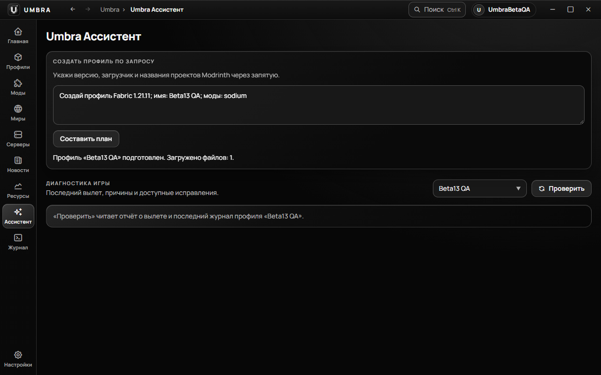
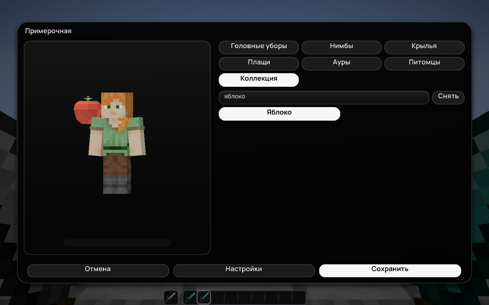

Профили и моды
Свои миры, настройки и загрузчик для каждой сборки. Каталог Modrinth ставит моды вместе с обязательными зависимостями.
Лаунчер и клиент для Minecraft: Java Edition
Собирай профили, устанавливай контент и настраивай игру на ходу. Umbra объединяет лаунчер и клиент в одном чёрном стекле.


Свои миры, настройки и загрузчик для каждой сборки. Каталог Modrinth ставит моды вместе с обязательными зависимостями.
Размеры и позиции виджетов, гибкий прицел, музыка в Dynamic Island и предпросмотр, который остаётся на экране.
Опиши версию и проекты, проверь план и создай профиль. При вылете Ассистент найдёт известные причины в локальном журнале.
Текущая сборка
Проверяем установщик и игровой клиент. Публичная ссылка появится после проверки загрузки и установки.
Готовим к запуску
Бесплатная версия включает лаунчер, весь игровой клиент и локальную диагностику. Для Plus готовим облачного ассистента, синхронизацию и резервные копии настроек.
Покупка откроется после тестирования оплаты.